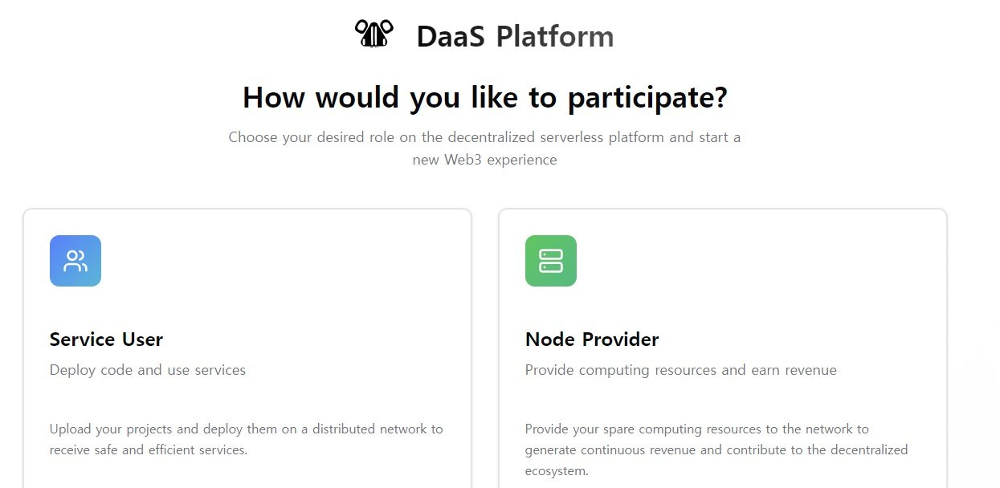
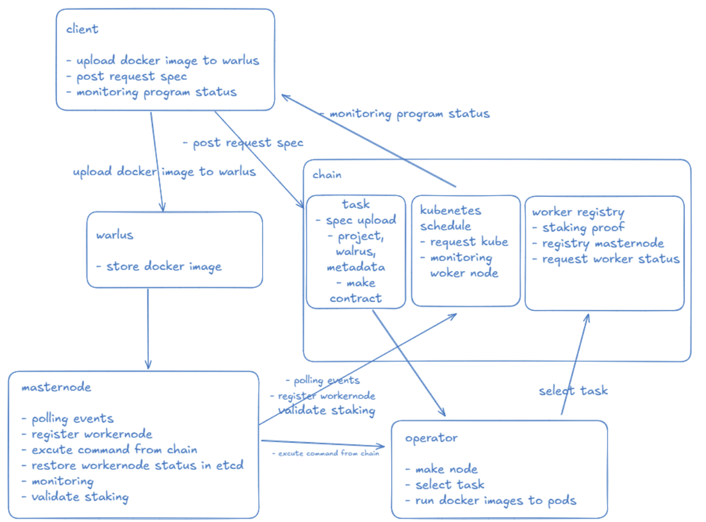
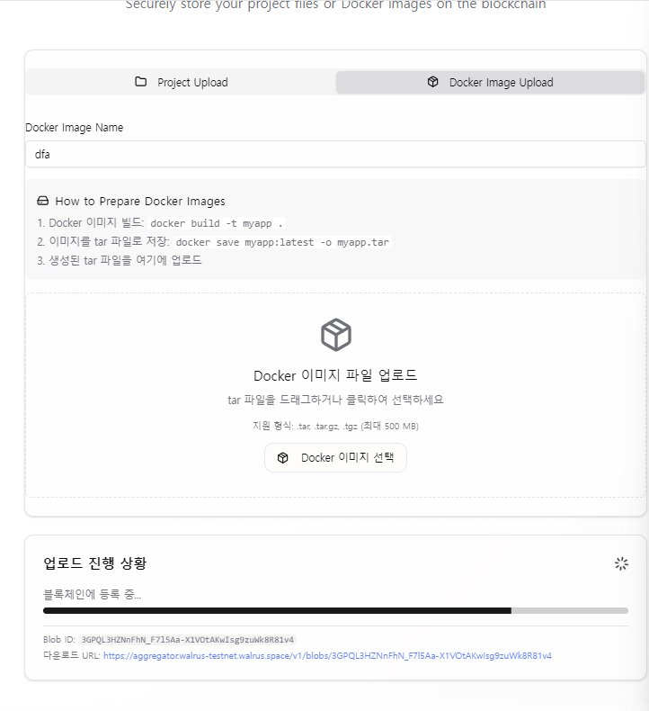
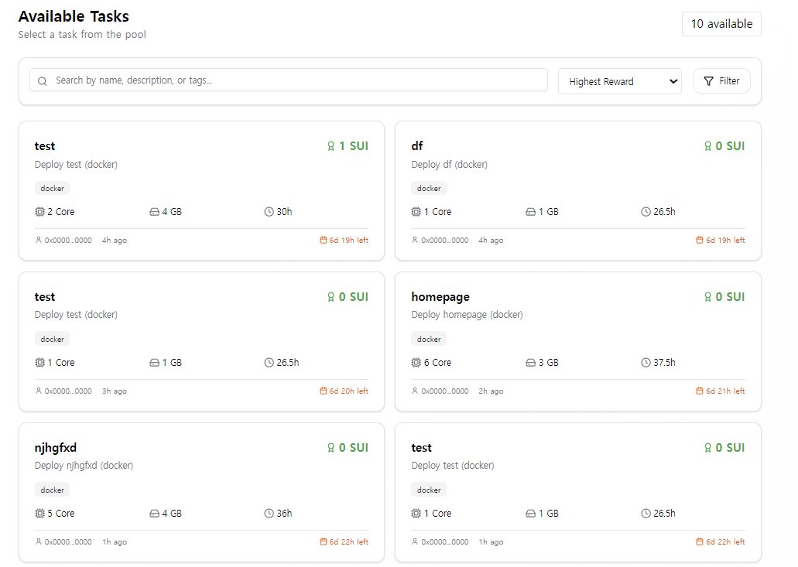

01상황: 어떤 프로젝트이고 무엇을 해결하는가
DAAS-Vader는 Sui 해커톤에서 만든 탈중앙 서버리스 플랫폼입니다. 목표는 "Sui의 Vercel"입니다.
이 서비스에는 두 종류의 사용자가 있습니다.
- 개발자: 팀 문서는 Vercel 같은 중앙화 서비스의 문제로 높은 비용, 벤더 락인, 검열 가능성을 꼽았습니다. 개발자는 지갑을 연결하고 Docker 이미지를 올려 앱을 배포합니다.
- 노드 제공자: 남는 컴퓨터 자원을 내놓고 보상을 받는 사람입니다. SUI를 맡기고 자기 컴퓨터를 워커로 등록합니다.

먼저 풀어야 할 기술 문제는 소유자를 알 수 없는 컴퓨터가 클러스터에 참여하는 것이었습니다. 가벼운 Kubernetes 배포판인 K3s는 기본 설정에서, 서버가 만든 참여용 비밀 값(join 토큰) 하나로 워커를 받습니다. 그래서 이 토큰만 있으면 누구나 클러스터에 참여할 수 있고, 참여한 워커가 누구의 컴퓨터인지도 구분하지 못합니다.
이 문제를 블록체인으로 풀려고 했습니다. 핵심은 기존의 중앙화된 인증을 블록체인 스테이킹으로 바꾸는 것입니다.
- 관리자가 주는 인증 대신 스테이킹을 워커 참여 조건으로 설계했습니다.
- SUI를 맡긴 워커에는 지갑 주소가 붙습니다. 그래서 누구의 워커인지 체인에서 확인할 수 있습니다.
- 배포 요청도 컨트랙트로 받아 체인에 기록을 남기게 했습니다.
- 이미지는 DockerHub 대신 Sui 생태계의 분산 저장소인 Walrus에 올리게 했습니다.
- 해결하려는 문제
- 토큰만 있으면 누구나, 소유자도 알 수 없이 클러스터에 참여할 수 있습니다.
- 해결 방식
- SUI 스테이킹을 워커 참여 조건으로 두고, 배포 요청은 컨트랙트로 받아 체인에 기록합니다.
02과제와 역할
서비스는 이미지 업로드, 워커 등록, 작업 실행 세 흐름으로 이뤄집니다. 아이디어를 내고 팀을 이끌며 전체를 설계하고 개발했습니다. 주요 부분은 다음과 같습니다.
- SUI를 맡기고 워커를 등록하는 경로를 만들었습니다. 등록을 받는 컨트랙트와, 마스터가 join 토큰을 컨트랙트에 기록하는 처리가 이 경로에 들어갑니다. 워커가 클러스터에 참여(join)할 때 스테이크를 확인하도록, 워커 컴퓨터에서 도는 K3s agent도 고쳤습니다.
- 마스터를 만들었습니다. 마스터는 클러스터 전체를 관리하는 K3s 서버를 실행하고, Sui 체인에서 새 이벤트를 조회합니다. 그리고 읽은 이벤트를 kubectl(Kubernetes에 명령을 보내는 도구) 명령으로 바꿔 실행합니다.
- Sui Move 언어로 컨트랙트 2개를 만들었습니다. 워커 등록과 스테이크를 관리하는 Worker Registry와, 배포 요청을 받아 실행할 워커를 고르는 K8s Scheduler입니다.
- 배포 문서를 쓰고, AWS EC2 서버를 워커로 준비하는 설정 스크립트를 만들었습니다.
웹 화면(Next.js)의 스테이킹 통계는 Worker Registry 컨트랙트를 그대로 읽습니다. 이미지는 Walrus에 올리고, 민감한 설정은 Mysten Seal로 암호화합니다.
03해결 과정
1. 아키텍처

- 그림의 "client, walrus, chain: task"는 이미지를 올리는 부분입니다. 개발자가 올린 이미지 파일을 Walrus에 하나의 데이터 덩어리(blob)로 저장하고, 이미지 정보를 컨트랙트에 등록합니다.
- 그림의 "chain: worker registry"는 직접 개발한 Worker Registry 컨트랙트입니다. 맡긴 스테이크가 조건을 채우는지 확인하고 워커를 등록합니다. 소유자별 워커 목록과 join 토큰도 여기에 보관합니다.
- 그림의 "chain: kubernetes schedule"은 직접 개발한 K8s Scheduler 컨트랙트입니다. 배포 요청이 올바른지 검사한 다음, 요청자의 워커 중 하나를 고릅니다.
- 그림의 "masternode"는 직접 개발한 마스터입니다. K3s 서버를 띄우고, 체인에서 받은 이벤트를 kubectl 명령으로 바꿉니다. 마스터는 Sui Nautilus의 보안 실행 환경(TEE) 안에 두었습니다. TEE는 밖에서 안을 들여다보거나 바꾸기 어렵게 막아 둔 실행 공간입니다.
- 그림의 "operator"는 노드 제공자의 컴퓨터 쪽이고, 워커는 노드 제공자의 컴퓨터에서 K3s agent를 띄워 클러스터에 참여합니다. 그림의 "select task"는 노드 제공자가 작업을 고르는 화면입니다. "run docker images to pods"는 고른 이미지를 워커에서 Pod(Kubernetes가 컨테이너를 실행하는 단위)로 실행하는 단계입니다.
2. 주요 흐름
흐름 1. 노드 제공자가 워커를 클러스터에 참여시키기
- 노드 제공자가
stake_and_register_worker를 호출하며 SUI를 맡깁니다. - 컨트랙트가 세 가지를 확인합니다. 맡긴 SUI가 최소 스테이크 이상인지, 같은 이름의 워커가 이미 있는지, 한 지갑 주소에 등록된 워커가 10개를 넘지 않는지입니다. 모두 통과하면 등록 이벤트를 냅니다.
- 마스터가 이벤트를 받아 K3s join 토큰을
set_join_token함수로 컨트랙트에 기록합니다. - 노드 제공자가
activate_worker함수로 워커를 활성(active) 상태로 바꿉니다. - 워커가 join 토큰으로
k3s agent를 실행해 클러스터에 참여합니다.
1~4단계는 Sui Testnet에 남은 실행 기록으로 실제 동작을 확인했습니다.
흐름 2. 배포 요청을 컨트랙트로 받아 처리하기
- 요청자가
submit_k8s_request함수로 배포 요청을 보냅니다. 요청에는 어떤 동작인지(메서드), 어떤 Kubernetes 객체를 다루는지(리소스), 어느 네임스페이스에 적용하는지, 요청 내용, 우선순위를 담습니다. - 컨트랙트는 메서드가 GET, POST, PUT, PATCH, DELETE 다섯 가지 중 하나인지, 리소스가 허용한 7종 중 하나인지, 우선순위가 1부터 10 사이인지를 확인합니다.
- 컨트랙트가 요청자 본인의 워커 중 활성 상태인 워커 하나를 고릅니다. 그리고 고른 워커에 기록된 작업 수를 1 늘립니다.
- 마스터가 요청 이벤트를 받고,
kubectl get nodes로 K3s가 준비됐는지 확인합니다. - 마스터가 요청을 kubectl 명령으로 바꿔 실행합니다. 결과와 실행 시간은 로그에 남깁니다.
흐름 3. 개발자가 이미지를 올리기
- 개발자가 Docker 이미지를 tar 파일로 올립니다. 화면이 이 파일을 Walrus에 저장하고, 저장된 파일을 가리키는 식별자(Blob ID)를 받습니다.
- 이미지 정보를 컨트랙트에 등록하면 작업 풀에 올라갑니다. 노드 제공자는 작업 풀에서 작업을 고릅니다.
작업 풀에서 고른 작업은 흐름 2의 배포 요청으로 이어집니다.


3. 설계 고민과 결정
워커가 클러스터에 참여하는 조건
- 고민: 개인 컴퓨터를 워커로 받으면 소유자를 알 수 없는 머신이 참여합니다.
- 선택지: K3s 기본 토큰 하나를 나눠 주는 방법, 관리자가 워커마다 토큰을 주는 방법, 워커마다 SUI를 맡기게 하는 방법이 있었습니다.
- 결정: 스테이킹을 골랐습니다. 첫째 방법으로는 워커의 소유자를 구분하지 못하고, 둘째 방법은 없애려던 중앙 관리자를 다시 두게 됩니다.
요청 경로를 어디에 둘까
- 고민: 처음에는 kubectl 요청을 게이트웨이가 받아 마스터로 넘겼습니다. 권한 검사는 마스터에서 일어났습니다. 그래서 사용자는 마스터를 믿어야 했습니다.
- 선택지: 게이트웨이 구조, 쓰기 요청만 컨트랙트로 확인하는 구조, 모든 요청을 컨트랙트로 먼저 받는 구조를 차례로 검토했습니다.
- 결정: 마지막 구조를 골랐습니다. 배포 요청은 Sui 명령줄 도구로 컨트랙트 함수를 부르는
sui client call로 시작하게 했고, 마스터는 체인에 기록된 요청 이벤트를 실행만 하게 했습니다. 권한 검사를 컨트랙트에 두어, 사용자가 믿어야 하는 대상을 마스터에서 컨트랙트로 옮겼습니다. 대신 요청이 체인을 거쳐 마스터에 전달되므로 응답이 몇 초 늦어지고, kubectl을 바로 쓰는 편의도 내려놓았습니다.
K3s를 어디까지 고칠까
- 고민: join 과정에 스테이크 확인을 넣으려면 K3s 소스를 고쳐야 합니다.
- 선택지: K3s 전체를 복사해 따로 관리하는 방법, 워커에 필요한 agent 쪽 코드만 가져오는 방법이 있었습니다.
- 결정: 워커에 필요한 것은 agent뿐이었으므로, agent와 그 의존 패키지만 가져왔습니다. 그리고 Go 모듈 설정 파일(go.mod)의 replace 지시어로, 원래 K3s 패키지 대신 가져와 고친 코드를 쓰도록 연결했습니다.
새 토큰과 원래 K3s 토큰을 같이 둘까
- 고민: 고친 agent가 원래 K3s 토큰을 받지 못하면, 스테이킹 없이 일반 K3s 워커로 하는 시험을 할 수 없습니다.
- 선택지: 새 토큰만 받는 방법, 두 형식을 모두 받는 방법이 있었습니다.
- 결정: 두 형식을 모두 받게 했습니다. 새 토큰은 직접 정한 형식으로, SEAL이라는 접두어로 시작하고 지갑 주소, 서명, 챌린지(서명할 대상으로 주는 값)를 담습니다. agent는 토큰이 이 형식이면 그 지갑의 스테이크와 서명을 확인하는 분기로 보내고, 그 밖의 토큰은 원래 K3s 검증으로 넘깁니다. 이 규칙은 join을 다시 시도하는 코드와 토큰을 읽어 들이는 코드 두 곳에 똑같이 넣었습니다.
4. 구현 상세
마스터
- Go로 만든 마스터 프로그램은 세 부분을 함께 실행합니다. K3s 서버를 관리하는 부분, 외부 요청을 받는 HTTP API, Sui 이벤트를 처리하는 부분입니다.
- K3s v1.28.2 서버는 가벼운 Linux인 Alpine 기반 컨테이너 안에서 실행합니다. K3s에 기본으로 들어 있는 Traefik(외부 접속을 받아 넘기는 프록시)과 servicelb(서비스용 로드밸런서)는 쓰지 않아서 껐습니다.
- 이벤트는 Sui JSON-RPC의 이벤트 조회 메서드인
suix_queryEvents로 3초마다 가져옵니다. 이때 배포한 컨트랙트 패키지의 ID와 이벤트 이름으로 걸러, 필요한 이벤트만 받습니다. - 요청 메서드는 kubectl 명령으로 바꿉니다. GET은
get, POST와 PUT은apply, PATCH는patch, DELETE는delete입니다. - 이벤트가 생기면 바로 받는 WebSocket 구독 코드도 만들었지만, 실제 이벤트 조회는 3초마다 직접 물어보는 폴링 방식으로 돌렸습니다.
컨트랙트
- Worker Registry는 워커를 두 표에 나눠 저장합니다. 하나는 노드 이름으로, 다른 하나는 소유자 주소로 찾습니다.
- join 토큰 기록은 관리자 주소만 할 수 있게 막았습니다.
- K8s Scheduler는 요청자 본인의 워커 중 활성 상태인 워커만 후보로 둡니다.
- 후보마다 점수를 매겨 워커를 고릅니다. 작업이 없는 워커는 1000점이고, 작업이 있는 워커는 100을 (작업 수 + 1)로 나눈 값입니다. 작업이 하나라도 있으면 100점에도 못 미치므로, 작업이 없는 워커가 먼저 뽑힙니다.
워커
- 워커 프로그램은 다음 순서로 동작합니다. 먼저 스테이킹이 되어 있는지 확인하고, K3s agent를 실행해 클러스터에 참여합니다. 그 뒤 30초마다 살아 있다는 신호(하트비트)를 보내고, 워커 상태를 알려 주는 API를 엽니다.
- 컨테이너를 실제로 띄우는 프로그램(컨테이너 런타임)은 설정에서 containerd와 Docker 중 하나로 고를 수 있습니다.
- AWS EC2 서버를 워커로 준비하는 설정 스크립트는, K3s 서버와 워커가 통신하는 데 쓰는 포트 6443, 10250, 8472(UDP), 51820(UDP)을 엽니다.
04트러블슈팅
Move 빌드가 bridge 모듈 중복으로 멈춘 문제
- 문제
- 컨트랙트를 빌드하는
sui move build명령이, bridge 모듈이 중복으로 있다는 오류(Duplicate module found: ...::bridge)를 내며 멈췄습니다. - 원인
- Sui 프레임워크가 업데이트되면서 bridge 모듈이 중복으로 들어왔습니다. 여기에 이전 빌드 때 정해진 의존성 버전을 적어 두는 Move.lock 파일의 옛 기록과도 충돌했습니다.
- 해결
- Move.lock을 지우고 다시 빌드하는 방법과, 의존성 설정을 바꾸는 방법을 정리해 차례로 시도했습니다. 최종적으로 패키지 설정 파일인 Move.toml에서 Sui 프레임워크를 Testnet용 버전(
framework/testnet)으로 고정했습니다. - 결과
- 빌드가 통과했고 패키지를 Sui Testnet에 배포했습니다.
05결과
- 2025년 9월 Sui Suimming Hackathon 2025 University Track에서 수상했습니다.
- Sui Testnet에 컨트랙트 패키지 2개를 배포했습니다. 핵심 컨트랙트인 Worker Registry와 K8s Scheduler의 코드는 약 740줄이고, 이와 별도로 시험용 모듈 2개가 들어 있습니다.
- 시험용 SUI를 실제로 맡겨 실행한 기록이 Sui Testnet에 남아 있습니다. 워커 등록이 6건, 워커 활성화가 5건, 마스터가 join 토큰을 기록한 것이 1건, 스케줄러가 배포 요청을 워커에 배정한 것이 8건입니다.
- 스케줄러의 배정 기록으로, 워커를 고르는 규칙이 의도대로 동작하는 것을 확인했습니다. 처음 요청 3건은 작업이 없던 워커 3개에 하나씩 나뉘어 갔고, 네 번째 요청은 다시 첫 번째 워커로 갔습니다.
- 마스터가 3초마다 Sui Testnet에 새 이벤트를 물어 배포 요청을 받고, 요청에 담긴 메서드, 리소스, 네임스페이스를 읽어 내는 단계까지 로그로 확인했습니다.
06배운 점
이번에는 join할 때 스테이크를 확인하는 코드를 워커 쪽 K3s agent에 넣었습니다. 그런데 워커 프로그램은 워커를 가진 사람이 바꿀 수 있으므로, 참여 조건은 워커가 아니라 서버가 확인해야 한다는 것을 배웠습니다. join 토큰은 클러스터에 들어오는 열쇠 같은 비밀 값인데, 이번 구조에서는 누구나 읽을 수 있는 체인의 컨트랙트에 기록했습니다. 이런 값은 공개 체인에 그대로 기록하면 안 됩니다. 또 노드 제공자가 맡긴 SUI는 컨트랙트 안에 보관해야, 나중에 돌려주거나 벌칙으로 깎을 수 있습니다.